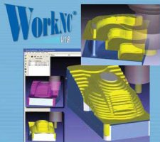

|
YENÝ FONKSÝYONLAR VE GELÝÞMELER
Günümüz
Dünya'sýnda üretkenlik; kullaným kolaylýðý, otomasyon, basitleþtirme,
keþfetme ve performansla elde edilir. WorkNC CAD/CAM yazýlýmýnýn
Versiyon 18'i, bu anahtar faktörlerin her biri üzerine odaklanmýþtýr.
Biz, mevcut kullaným özelliklerini daha da artýrýp yenilerini
geliþtirirken, kullanýþlýlýðý temin etmek ve yeni modüller
geliþtirmek için kapsamlý bir çalýþma yaptýk. Bu, WorkNC müþterileri
için maksimum verimlilik eldesini saðlar.
OTOMATÝK
5-EKSEN ÝÞLEME AMAÇLI YENÝ AUTO 5 DÖNÜÞÜM FONKSÝYONU
V18,
aþýrý akýþkan 5-eksen hareketi otomatik olarak temin eden
düzenleyici yeni fonksiyonlar içerir. Auto 5'in otomatik 3
ve 5 eksen iþleme dönüþümünü hýzlandýrmak, basitleþtirmek
ve güvenilirliðini artýrmak için yeni seçenekler ekledik.
Yeni dönüþüm fonksiyonlarý içinde, iþlem çevre simülasyonu
ile birlikte otomatik çarpma ve iþleme açýsý limit yönetimi
de ayrýca mevcuttur.
YENÝ
ÖZELLEÞTÝRÝLMÝÞ 5-EKSEN EÞ-ZAMANLI ÝÞLEMLER
WorkNC'nin
Eþ-zamanlý (simultane) 5-eksen iþleme yollarýna ayrýca düzenleyici
yeni fonksiyonlar da eklendi. Bu fonsiyonlar, çok düzgün hareket
saðlayýp yüksek kalitede yüzey bitimini temin eder. Bu son
versiyona ayrýca, kullanýcýlarýn derin kaviteleri/boþluklarý
(lolipop, disk, vs) özel aletlerle iþlemelerine izin veren
yeni bir seri iþlem de ekledik. Buna ek olarak, 4-eksen iþleme
için bir iþlem ve yeni bir 5-eksen laser kesme iþlemiyle birlikte,
basit veya karmaþýk pervaneleri/çarklarý iþlemek için 3 yeni
iþlemden oluþan (Roughing -kaba yüzey alma-, Re-roughing -pürüzlendirme-,
ve Finishing -cilalama, perdahlama-) bir takým mevcuttur.
V18
ayrýca þunlarý içerir:
- Yeni
Auto 5 dönüþüm stratejileri: A/B açýlarýný, düþey ekseni,
4 ekseni, Radyal ekseni destekler/muhafaza eder.
- Makine
kafa pozisyonunun ve yöneliminin interaktif yönetimi (hesaplama
ve doðrulama),
- Normal
eksenlerin interaktif deðiþimi (modifikasyonu),
- Ýki
nokta arasýnda Normallerin düzgünleþtirilmesi
- Darbelerin/çarpýþmalarýn
raporlanmasý
2,
3 ve 3+2 EKSENLÝ ÝÞLEMEDE GELÝÞMELER VE YENÝ STRATEJÝLER
En
uygun yüzey alma için Dinamik Stok Model Yönetimi:
WorkNC'nin
yeni dinamik stok modeli ve takým tutucu yönetimi, her iþlem
noktasý oluþturulurken, yüzey alma iþlemlerinin gerçek zamanlý
güncellenmesine olanak saðlar. Bu yeni fonksiyon yüzey almada
büyük bir aþama olup, takým tutucunun ölçüsü ve þekli ne olursa
olsun nitelikli iþlemleri temin eder. Mümkün olduðunda týrmanma
modunda iþlemeyi daha iyi temin etmek üzere, iþlemleri de
mükemmelleþtirdik. Bu, daha düzgün ve daha akýþkan iþlemleri
oluþturarak, geri dönüþ sayýsýný en aza indirir.
Mükemmelleþtirilmiþ
Finishing iþlemleri:
Ýþleme
sürelerini düþürürken kaliteyi artýrmak için, yeni bir Z-seviyesi
Finishing iþlemi oluþturduk. Yüzey izlerini ortadan kaldýrmak
için otomatik yeni baþlangýç stratejileri geliþtirdik. Havada
kesmeyi de mümkün olduðunca önlemek üzere, geri dönüþ sayýsý
da ayrýca en aza indirilmiþtir. Yüksek hýzda iþleme için hayati
olan artýrýlmýþ iþlem akýþkanlýðý da ayrýca bu iþlemin anahtar
özelliðidir.
V18
ayrýca þunlarý içerir:
- Takým
servis ömrü yönetimi
- Bir
eðri veya bir nokta kümesini takip eden Daldýrma Yüzey Alma
(plunge roughing),
- Düzlemsel
Yüzey Bitirme -cilalama- için baþlangýç dokunma genleþmesi
(lead-in tangency extension)
- Anahtar
yollarý iþlemek için Trokoitsel eðri
(yüksek Z-seviyesi ile açýlan bir tek geçiþli anahtar yol)
- Eðri
iþleme için Trokoitsel hareketler
- Derin
boþluk sondaj yönetimi
- Geliþtirilmiþ
sondaj fonksiyonlarý (bileþik açýyla delme, sondaj baþlangýç
yön seçimi, vb)
- Geliþtirilmiþ
ve mükemmelleþtirilmiþ düz yüzey iþleme.
Uyarlanabilir Trokoitsel yüzey alma:
Bu
yeni akýllý iþlem, sert malzemeleri HSM veya geleneksel freze
tezgahlarý ile iþlemek üzere uyarlanmýþtýr. Üstelik, týrmanma
modundaki sabit yükselme adýmlarý maksimum takým servis ömrünü
temin eder. Bu iþlem, trokoitsel hareketin parametrik çalýþmasýndan
dolayý yüksek optimizasyon seviyesi verir.
Yeni
spiral nüve yüzey alma iþlemi:
Göbek-nüve
þekilli parçalar üzerinde en uygun akýþkan iþlemleri oluþturmak
için yeni bir yüzey alma iþlemi tasarladýk. Bu iþlemin bir
özelliði, her Z seviyesinde devam eden sürekli bir spiral
eðriden kaynaklanan düþük geri dönüþ sayýsýdýr. Ýþleme süreleri
minimumda korunurken, takým servis süresi maksimuma çýkarýlýr.
GELÝÞTÝRÝLMÝÞ
KULLANIÞLILIK
Versiyon
18, WorkNC kullanýcý arayüzünde önemli geliþmeler getirmiþtir:
- Artan
geniþlikte bir sahadan iþlemlere basitleþtirilmiþ eriþim
ve iþlemlerin seçimi,
-
Kullanýcýlarýn en çok kullandýklarý iþlemleri gruplandýrmalarýný
mümkün kýlan, oluþturulmasý kolay kullanýcýya özel menüler
-
Entegre bilgi tabanýndaki deðiþtirilebilir kurallarýn uygulanmasýyla,
otomatik ve güvenilir iþlem parametre programlama.
V18
ayrýca þunlarý içerir:
-
VisuNC ile 3/5 eksenli iþlem düzenlemesi yanýnda, eðri ve
çevre yüzeyleri oluþturmak için geliþtirilmiþ kullanýcý
arayüzü
-
'Auto 5' (otomatik 5 eksen iþleme) bilgisinin Menü içine
entegrasyonu
-
'Auto Engrave'in (oto kabartma iþlemesi ) Menü içine entegrasyonu
WORKNC-CAD V18 HYBRID (MELEZ) 3-BOYUTLU MODELLEME VE OTOMASYONU
Karmaþýk
boþluklarý sadece birkaç fare týklamasýyla doldurun..
Yeni
tip bir yüzey WorkNC-CAD V18'in kapsamýný geniþletiyor: Yüzey
Geçiþ (Surface Morphing) ile, birkaç fare kliklemesiyle karmaþýk
bir sýnýr içindeki alaný kapatmak kolaylaþýyor. Günümüzde
pek çok ürün sýklýkla karýþýk þekiller içerdiðinden, WorkNC
geliþtiricileri çok karmaþýk yüzeyler için etkin düzeltme
fonksiyonlarý oluþturmuþtur.
Melez 3 Boyutlu (3D) Katý/yüzey Modelleyici:
Melez
3 Boyutlu (3D) Katý/yüzey Modelleyici'nin entegrasyonu, kullanýcýlara
daha fazla verimlilik artýþý saðlayan takýmlar temin eder.
3D Fillet (3 boyutlu dolgu), parametrik katý modelleme ve
surface reconstruction (yüzey yeniden yapýlanmasý) gibi geliþmiþ
fonksiyonlar, modellemenin ve 3 boyutlu model iþleme hazýrlýðýnýn
sýnýrlarýný zorlar.
Özelleþtirilmiþ
fonksiyonlarýn otomasyonu - kalýp takýmlarý:
Bu
yeni fonksiyon kümesi, kalýp takýmlarý üzerinde otomatik dolgu
deðiþimi (fillet modification) gibi özelleþtirilmiþ karmaþýk
iþlemleri otomasyona sokmak için etkin yollar saðlar. Çeþitli
denemelerde, büyük iþleme ekipmanýnýn hazýrlýk süreleri, saatlerden
birkaç dakika seviyesine düþürülmüþtür.
Asosyatif
(associative) 2 Boyutlu taslak çizimi:
Asosyatif
taslak çizimi, 3 boyutlu modellerle taslak çizim fonksiyonu
arasýndaki bir dinamik baðlantý/link'ten kaynaklanan herhangi
bir deðiþimin ardýndan kolayca güncellenebilen parçalarýn
2 boyutlu çizimini mümkün kýlar. Kullanýcýlar yeni, etkili,
kullanýþlý bilgi notu fonksiyonlarýný beðeneceklerdir.
V18
ayrýca þunlarý içerir:
-
Taslak açý analizi
-
3 boyutlu katý düzeltme fonksiyonu
-
Gizli kenarlarýn dinamik kontur gösterimi (wireframe display)
-
Yüzey seçimi
-
CATIA V5® ve UG® montaj aðaç yapýsý gösterimi
-
Doðrudan CATIA V5® ve UG® aðaç yapýsýndan veri alýmý /import
edilmesi (CAD parçasý, CAD modeli).
WORKNC ARAÇLARI VE YARDIMCI UYGULAMALARI:
Import
/ Export Arayüzleri : Standart ve kendine özgü WorkNC arayüzlerini
geliþtirdik ve güncelledik (CATIA V5 R14).
"Atölye
dokümantasyonu" ("Workshop Documentation"),
açýk ve net bir menü ile kiþiye özel dokümantasyonun kolayca
tanýmlanmasýný mümkün kýlan yeni iþleme serisi dokümantasyonu
oluþturucudur.
"Paketle
ve Çýk" ("Pack & Go"), birkaç fare týklamasý
ile kullanýcýlarýn çalýþma kuþaklarýný dosyalamalarýný mümkün
kýlan basit bir yardýmcý uygulamadýr.
YENÝ
WORKNC 2/4 EKSEN WIRE EDM SEÇENEÐÝ
WorkNC
kullanýcýlarýnýn özel ihtiyaçlarýný saðlamak için tasarlanan
Wire EDM opsiyonel modülü esnek ve basit 2 ve 4 eksen programlamayý
saðlar.
CAD
Modülü içine tamamen entegre olan Wire EDM Modülü, bütün WorkNC-CAD
özelleþtirilmiþ fonksiyonlarýna sahiptir:
-
CAD dosyalarýna uyumluluk,
-
2 boyutlu veya 3 boyutlu model iþleme,
-
Kesme profillerinin otomatik uzatýlmasý,
-
Geliþmiþ kesme stratejileri: Bunlar, ilk seçildikleri anda
veya 2 ya da 4 eksen kesme söz konusuysa daha sonra, otomatik
olarak açýk veya kapalý profiller üzerinde uygulanýr.
-
Ýnteraktiflik ve simülasyon,
-
Kullanýcýya özel son iþlemciler: Piyasadaki makineler için
geniþ bir son iþlemci aralýðý mevcuttur. Son iþlemciler,
makinelerin, kontrolcülerin veya çalýþma metotlarýnýn özel
isteklerine uyarlanýr.
Daha
fazla bilgi için: www.bsdt.net/demo/workncv18.pdf
(2,5MB)
 Ýrtibat: Ýrtibat:
Sonat Elmacý
sonate@bsdt.net
BSDT Biliþim
Mecidiyekoy Mah. Atakan Sok. No:13/2
80310 Mecidiyeköy Ýstanbul
Tel: (212) 217 82 23
Faks: (212) 213 75 75
Web: www.bsdt.net
|